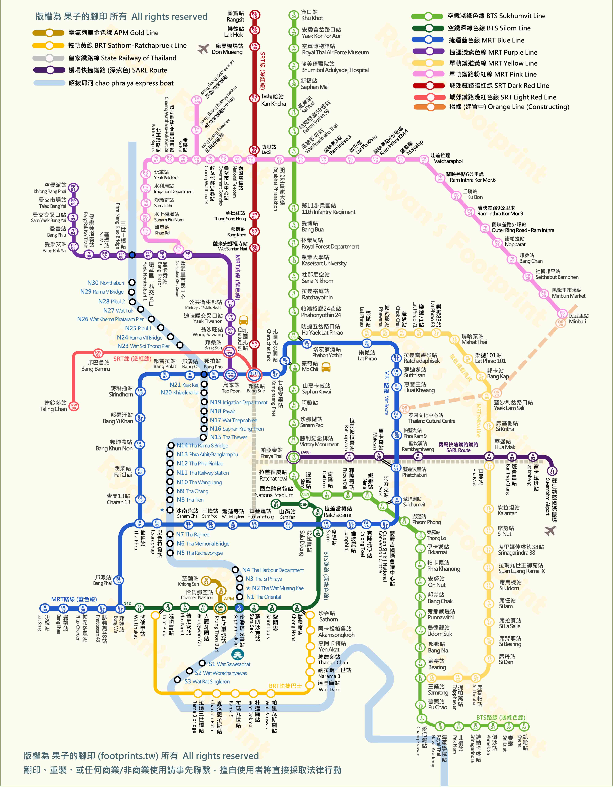

Bangkok
11/5–11/11
2026
5
6
7
8
9
10
11
DAY 1
11/5
|
WED
12:30
抵達曼谷・通關・前往飯店
14:00
入住巴吞旺公主飯店
整理攝影裝備
15:30
Ban That Thong
2hr
修車廠、五金零件、黑油地面
工業庶民感
17:30
Chula 巷弄
1hr
學生生活與老店混合場景
世代對比
18:30
Ban That Thong 夜拍
2.5hr
路邊攤、霓虹燈、人潮
夜生活與壓迫感
DAY 2
11/6
|
THU
08:30
前往老城
09:30
Talat Noi
3hr
打鐵舖、舊引擎、老人、老建築
時間停滯
12:30
Song Wat 午餐＋街拍
13:30
Song Wat Road
2hr
新舊建築混合街景
歷史與文青對比
15:30
Yaowarat 唐人街
4hr
日落到夜景，光線漸層
光線變化
23:00
Pak Khlong Talat 花市
2hr
夜間勞動、暖光花攤
午夜工作者
DAY 3
11/7
|
FRI
08:00
包車出發
09:30
美功鐵道市場
1.5hr
火車穿越市集的震撼瞬間
危險與秩序
11:30
安帕瓦水上市場
5hr
船麵、煙霧、交易場景，延伸至傍晚
水上生活
16:30
返回曼谷（可休息或街拍）
DAY 4
11/8
|
SAT
08:30
Nang Loeng 市場
2.5hr
老建築、市場人物特寫
靜態人文
11:00
午餐
13:00
BACC 曼谷文化藝術中心
2hr
白色旋轉樓梯幾何結構
極簡構圖
15:00
Chatuchak 市場
3.5hr
色彩繽紛攤位、各式店主人像
混亂秩序
18:30
Or Tor Kor 市場
1hr
高級食材市場，精緻陳列
階級對比
DAY 5
11/9
|
SUN
10:00
退房移動至 Asok 區飯店
13:00
Dusit Central Park
2.5hr
現代步道與公園環境對比
城市與自然
15:30
Benjakitti Forest Park
2hr
日落前黃金時段光線
都市綠洲
17:45
Mahanakhon Skywalk
1.75hr
日落＋藍調＋夜景三段光線
城市幾何
19:45
SW1 Market
1.25hr
文青夜市氛圍
現代生活
DAY 6
11/10
|
MON
09:00
Wongwian Yai 車站
2.5hr
在地通勤生活場景
庶民交通
11:30
Tha Tian 市場
1.5hr
魚乾市場、老街紋理
粗糙真實
13:30
Nextopia（Siam Paragon）
2hr
未來感建築與室內空間
科技感
16:30
鄭王廟對岸
2.5hr
河岸夕陽倒影，靜謐收尾
靜態收尾
DAY 7
11/11
|
TUE
07:00
Khlong Toei 市場
2.5hr
生鮮市場、搬運工，最後一擊
人文張力
09:30
返回飯店整理
11:00
Terminal 21 購物＋午餐
14:30
出發前往機場
17:00
✈ 班機離開・再見曼谷
交通路線
曼谷地鐵路線圖
2026 MRT / BTS / SRT 雙指縮放・拖移
＋
－
⊙

Trip Info
旅遊資訊
✈ 機票
去程 臺北 → 曼谷
2025年11月5日
09:25
TPE
桃園 2 航廈
4h 10m
2025年11月5日
12:35
BKK
蘇凡納布
STARLUX JX741 A350-900 經濟艙
回程 曼谷 → 臺北
2025年11月11日
17:40
BKK
蘇凡納布
3h 50m
2025年11月11日
22:30
TPE
桃園 2 航廈
STARLUX JX746 A330-900NEO 經濟艙
🏨 住宿
11/5（三）— 11/9（日） 4 晚
巴吞旺公主飯店
Pathumwan Princess Hotel
BTS 深綠線
National Stadium 站
含早餐
11/9（日）— 11/11（二） 2 晚
大中心點 21 號航站飯店
Grande Centre Point Terminal 21
BTS 淺綠線
Asok 站
含早餐
—
Trip Info
旅遊資訊
✈ 機票
去程 臺北 → 曼谷
2025年11月5日
09:25
TPE
桃園 2 航廈
4h 10m
2025年11月5日
12:35
BKK
蘇凡納布
STARLUX JX741 A350-900 經濟艙
回程 曼谷 → 臺北
2025年11月11日
17:40
BKK
蘇凡納布
3h 50m
2025年11月11日
22:30
TPE
桃園 2 航廈
STARLUX JX746 A330-900NEO 經濟艙
🏨 住宿
11/5（三）— 11/9（日） 4 晚
巴吞旺公主飯店
Pathumwan Princess Hotel
BTS 深綠線
National Stadium 站
含早餐
11/9（日）— 11/11（二） 2 晚
大中心點 21 號航站飯店
Grande Centre Point Terminal 21
BTS 淺綠線
Asok 站
含早餐
—
Travel Budget
旅遊記帳
總支出
฿0
今日
฿0
筆數
0
筆記錄
🍜 餐飲
🚇 交通
🏨 住宿
🛍️ 購物
📷 票券
💊 其他
11/5
11/6
11/7
11/8
11/9
11/10
11/11
＋ 新增記錄
支出明細
💰
還沒有記錄，開始記帳吧！
行程
地圖
記帳
資訊